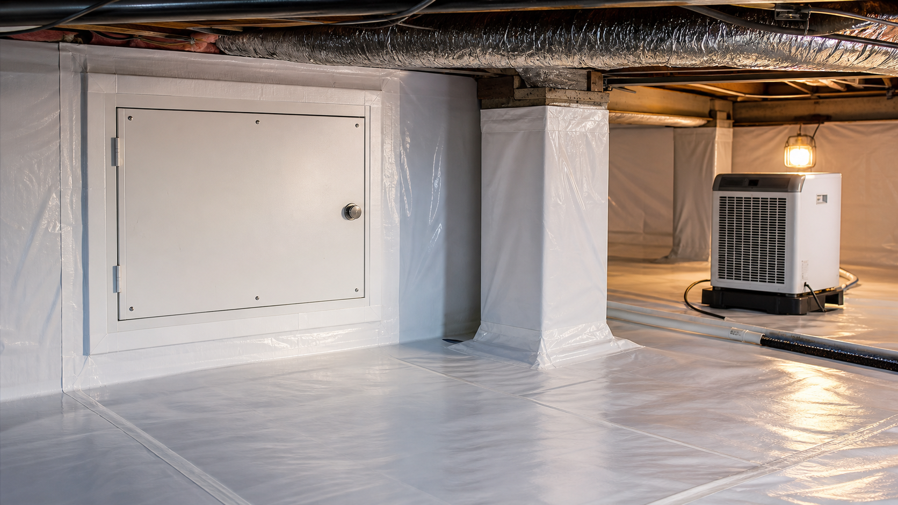
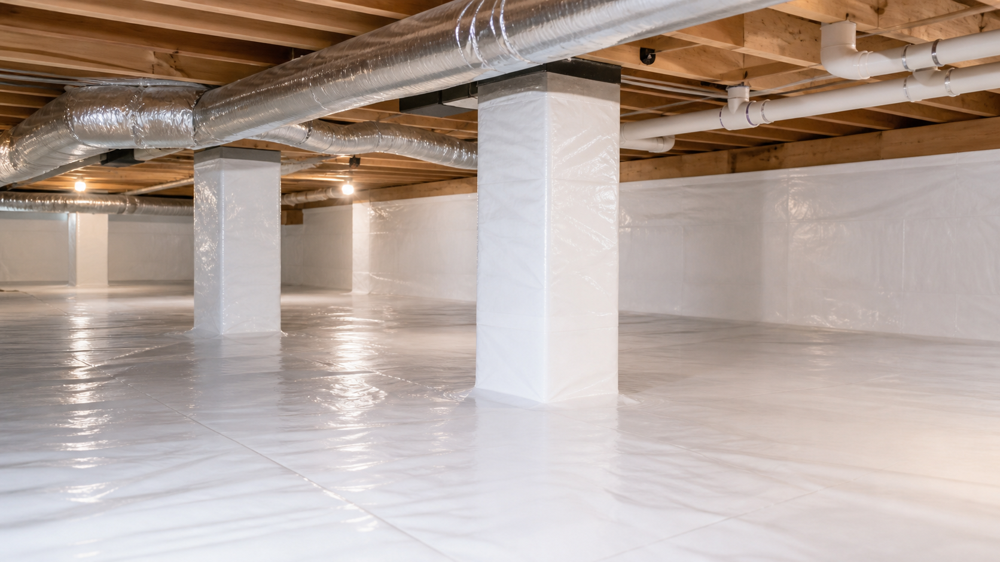

01
Vapor Barrier
Catawba Crawlspace Co. installs reinforced vapor barrier material in Bessemer City crawlspaces so exposed soil becomes a clean, covered surface that supports steady foundation edges control.
Crawlspace Encapsulation in Bessemer City
Catawba Crawlspace Co. provides crawlspace encapsulation in Bessemer City for homeowners who want stronger moisture control, steadier indoor comfort, improved service access, and a better protected floor system that fits Bessemer City homes west of Gastonia with wooded yards, clay soil, and crawlspace access around established streets. The team designs each crawlspace vapor barrier, air sealing detail, drainage review, insulation recommendation, and dehumidifier pathway around local references like Centennial Park, nearby communities such as Gastonia and Cherryville, and the way humid summers, summer storms, and seasonal leaf accumulation affect foundation areas.
The Local Problem

For many Bessemer City homeowners, crawlspace encapsulation starts with uncontrolled moisture and air movement created by foundation edges, utility paths, and landscape debris. That condition matters because humid crawlspace air can contact wood framing, ducts, insulation, masonry, plumbing penetrations, and the subfloor below the rooms above.
The local setting near Centennial Park matters because humid summers, summer storms, and seasonal leaf accumulation can influence ground vapor, foundation leakage, condensation potential, exposed soil, foundation vents, access doors, and perimeter walls. Homeowners usually notice the need when insulation loses performance, floor surfaces feel uneven, rooms feel humid, HVAC equipment works harder, or service areas become difficult to inspect.
Many Bessemer City properties include single-family homes, older foundations, and ranch-style crawlspace layouts, so the homeowner needs an under-home environment that supports floor joists, beams, ductwork, plumbing lines, masonry walls, and service clearances. Catawba Crawlspace Co. focuses encapsulation on the practical reasons homeowners actually care about: protecting the floor system, stabilizing humidity, reducing unwanted air exchange with the home, supporting energy efficiency, and making the crawlspace easier to service.
The Solution

Catawba Crawlspace Co. installs reinforced vapor barrier material in Bessemer City crawlspaces so exposed soil becomes a clean, covered surface that supports steady foundation edges control.
The crew seals vents, penetrations, access gaps, and wall details near Centennial Park because controlled utility paths helps the encapsulated crawlspace work with the home.
The project review studies grading, low points, downspouts, and service routes in Bessemer City so drainage planning supports the liner, walls, and finished crawlspace.
Catawba Crawlspace Co. reviews insulation, ducts, plumbing, and utility clearances in Bessemer City because the finished crawlspace should stay useful for service visits.
The plan includes dehumidifier-ready placement and air movement recommendations so the Bessemer City crawlspace has a clear path for long-term moisture management.
The completed Bessemer City crawlspace gives homeowners a brighter under-home area with visible seams, clean access paths, and practical maintenance guidance.
The Process
Catawba Crawlspace Co. follows a step-by-step Bessemer City process because a durable sealed crawlspace depends on inspection, preparation, liner installation, drainage planning, humidity control, and a clear finished walkthrough.
Catawba Crawlspace Co. checks the Bessemer City crawlspace entry, exposed soil, foundation vents, wall edges, duct runs, plumbing penetrations, grading, and downspouts so the project starts with local facts.
The crew clears debris, smooths walking paths, verifies utility access, and prepares wall surfaces in Bessemer City because clean preparation helps the liner and seals look finished.
Catawba Crawlspace Co. places reinforced polyethylene liner, overlaps seams, seals wall edges, and wraps piers so the Bessemer City encapsulation layer creates a continuous moisture-control surface.
The project plan addresses drainage adjustments, sump pump placement when useful, vent sealing, and dehumidifier location so Bessemer City homeowners receive one coordinated crawlspace system.
The final walkthrough shows the Bessemer City homeowner the liner, seams, access paths, and maintenance recommendations before the crew connects the work back to nearby service routes toward Gastonia and Cherryville.
Local Context
Catawba Crawlspace Co. serves Bessemer City along routes from downtown Bessemer City toward Gastonia, Kings Mountain, and Cherryville, which helps the crew understand how nearby communities such as Gastonia and Cherryville share similar weather, soil, and housing patterns. This local context lets the company recommend crawlspace encapsulation details that fit the area instead of relying on one-size-fits-all language.
Homes near Centennial Park can have shaded edges, landscaped beds, utility penetrations, or grade changes that shape how a vapor barrier, sealed wall, crawlspace access door, and drainage plan should be detailed. The inspection explains those location-specific details in plain language so the homeowner understands the reason behind each step.
The Bessemer City service page targets crawlspace encapsulation in Bessemer City because searchers usually want a contractor who understands the town, the surrounding county, and nearby service markets. Catawba Crawlspace Co. connects that geography to the practical work of sealing the crawlspace, managing humidity, and improving under-home usability.
Trust Signals
Homeowners in Bessemer City work with Catawba Crawlspace Co. because the company documents crawlspace conditions, explains the scope clearly, aligns the project with Gaston County, and keeps the finished result focused on a clean, usable space.
The Outcome
The finished Bessemer City crawlspace gives the homeowner a ground surface covered by durable liner, sealed foundation openings, visible access paths, and a clearer path for ongoing humidity management. Catawba Crawlspace Co. focuses the outcome on comfort, moisture control, service access, and home stewardship.
A well-planned encapsulation system supports the living space above because ducts, pipes, floor joists, beams, and insulation sit above a crawlspace that is easier to inspect and maintain. Bessemer City homeowners gain a practical foundation upgrade that helps the house perform better from below.
Catawba Crawlspace Co. completes the work with a walkthrough that shows what was installed, where the seams and access points are located, why the system was built that way, and how the homeowner can keep the crawlspace simple to monitor. The result is a confident, positive improvement for homes near Gastonia, Cherryville, and the broader Gaston County area.
Nearby Service Pages
Catawba Crawlspace Co. connects Bessemer City service planning with nearby communities because homeowners often compare crawlspace solutions across the same local weather, soil, and housing patterns.
Questions
Crawlspace encapsulation in Bessemer City includes vapor barrier installation, wall sealing, pier wrapping, vent control, drainage review, insulation planning, and dehumidifier-ready humidity control when the home needs it.
Local context matters because Bessemer City homes near Centennial Park, Gastonia, and Cherryville can have different soil, shade, drainage, and access conditions that shape the right crawlspace scope.
A vapor barrier covers exposed soil in a Bessemer City crawlspace, while full encapsulation also addresses vents, seams, wall edges, pier wrapping, access doors, air leaks, drainage conditions, insulation details, and humidity control.
Catawba Crawlspace Co. seals vents in Bessemer City when the encapsulation design needs to reduce humid outdoor air movement below the floor system. This helps the crawlspace become a controlled under-home environment instead of an open pathway for seasonal moisture.
A Bessemer City crawlspace may need a dehumidifier when local humidity, crawlspace size, drainage conditions, or duct and insulation conditions call for active moisture control. Catawba Crawlspace Co. reviews those details before recommending equipment.
Drainage should be reviewed before encapsulation in Bessemer City because bulk water, grading, low points, downspouts, and foundation seepage can affect the finished liner and humidity-control plan.
Crawlspace encapsulation can support indoor air quality in Bessemer City homes by reducing uncontrolled moisture and air movement below the floor system. The goal is to limit crawlspace conditions that contribute to humid air movement, musty odors, and biological growth conditions.
A sealed and insulated Bessemer City crawlspace can support energy efficiency when ducts, floors, rim joists, and foundation walls sit above a better-controlled environment. The exact benefit depends on the home layout, air leakage, insulation condition, and humidity-control design.
Catawba Crawlspace Co. reviews insulation in Bessemer City because damp, sagging, or misplaced material can reduce comfort and hide conditions that should stay visible. The recommended insulation approach depends on how the crawlspace will be sealed and conditioned.
Encapsulation does not remove existing microbial growth by itself. If visible growth is present in a Bessemer City crawlspace, the area should be evaluated for cleaning or remediation before the new moisture-control system is finished.
Bessemer City homeowners should compare liner thickness, seam sealing, wall attachment, pier wrapping, vent sealing, access-door treatment, drainage recommendations, insulation scope, dehumidifier specifications, warranty terms, and photo documentation.
A finished Bessemer City crawlspace should be checked periodically so the homeowner can confirm that the liner, seams, access door, drainage path, dehumidifier, and visible utilities remain in good condition, especially after heavy rain or long humid weather.
Catawba Crawlspace Co. reviews the crawlspace, documents conditions, explains each recommended step, and gives the Bessemer City homeowner a clear plan for the finished encapsulation system.
Start Here
Catawba Crawlspace Co. will review the crawlspace, explain the best vapor barrier and moisture-control path, and provide a clear next step for homes near Centennial Park, Gastonia, Cherryville, and the surrounding Gaston County area.
Phone: 704-276-6624